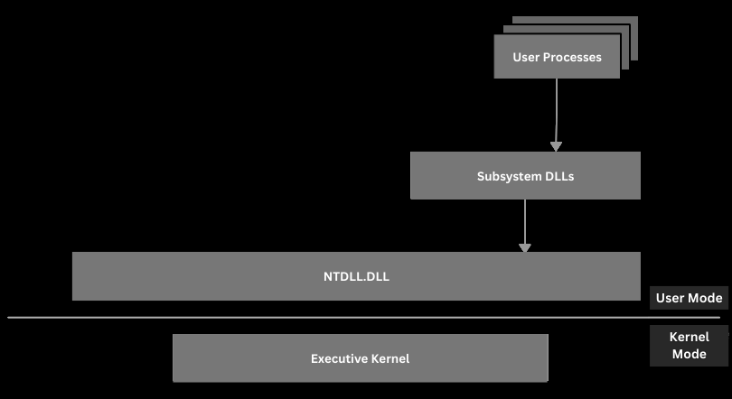
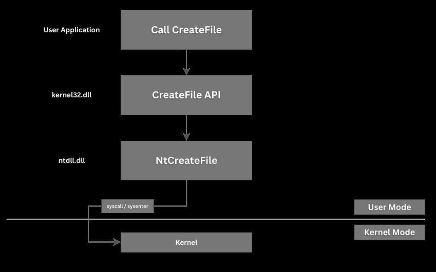

Pré-requisitos: Os requisitos para os usuários que planejam aprender Desenvolvimento de Malware são, primeiro de tudo, os fundamentos de programação, já que a maioria das vezes é lidado com a linguagem de programação C. É um requisito que você esteja familiarizado com os fundamentos de C.
Então, o que é realmente Arquitetura do Windows? É o que acontece por trás dos processos e aplicativos do Windows, a estrutura interna do sistema operacional Windows, envolvendo camadas como hardware, kernel, serviços executivos e DLLs de subsistema.
Arquitetura do Windows
Primeiro, vamos esclarecer alguns termos:
O que é um processador?
O processador é a CPU, o hardware que executa as instruções. Ele busca, decodifica e executa instruções de máquina, realiza operações aritméticas e lógicas, além de gerenciar o fluxo de controle entre os diversos programas (ou processos) que estão em execução na máquina.
O que é um aplicativo?
Um aplicativo é um programa que roda no sistema operacional, utilizando seus recursos para funcionar. Ele é armazenado no disco como um arquivo executável (ou conjunto de arquivos) e, quando executado, o Windows carrega o aplicativo na memória como um ou mais processos. O código do aplicativo, juntamente com seus recursos (dados, bibliotecas, etc), então é executado sob a direção do sistema operacional e é processado pelo processador. Há uma separação que você deve entender entre o arquivo do programa (o código) e seu processo (a instância em execução).
Subsystem DLLs:
As DLLs de subsistema são bibliotecas de link
dinâmico que implementam os subsistemas em modo de
usuário do Windows (explicados abaixo). No Windows,
grande parte da funcionalidade fornecida para os
aplicativos não está embutida no kernel—ela é
oferecida por meio dessas DLLs modulares. Exemplos
incluem bibliotecas como
kernel32.dll,
user32.dll,
gdi32.dll, e outras. Cada uma delas é
projetada para fornecer um conjunto específico de
serviços, como
kernel32.dll, que
oferece funções para gerenciamento de memória, criação
de processos e entrada/saída de arquivos,
user32.dll, que implementa
componentes de interface do usuário (janelas,
mensagens, manipulação de entrada), ou
gdi32.dll, que lida com funções de
interface de dispositivo gráfico para desenho e
gerenciamento de fontes.
Essas DLLs fazem a ponte entre o código de aplicativo de alto nível e o kernel do Windows. Quando um aplicativo faz uma chamada de API para realizar uma tarefa (como abrir uma janela ou ler de um arquivo), normalmente ele chama uma função em uma dessas DLLs de subsistema. A DLL então traduz essa solicitação em chamadas de sistema de nível inferior que o kernel pode processar. Esse design modular e em camadas mantém o sistema eficiente e mais fácil de atualizar.
Windows API:
A Windows API (Interface de Programação de Aplicações) é o conjunto completo de funções, estruturas de dados e convenções que a Microsoft expõe para permitir que os aplicativos interajam com o Windows. Informalmente conhecida como Win32 (para a versão de 32 bits) ou simplesmente Windows API, é a forma padrão para os desenvolvedores solicitarem serviços do sistema operacional.
A API é vasta, cobrindo funções para:
- Gerenciamento de processos, entrada/saída de
arquivos, alocação de memória (por exemplo,
CreateProcess,ReadFile). - Criação e gerenciamento de janelas, processamento
de mensagens, desenho de gráficos (como
CreateWindow,MessageBox). - GDI/GDI+ para desenhar texto e imagens.
Como Funciona:
Quando você escreve um aplicativo Windows, inclui
arquivos de cabeçalho (windows.h) que
declaram essas funções e tipos. Em tempo de execução,
as chamadas do seu aplicativo são encaminhadas através
do carregador do Windows para a DLL de subsistema
apropriada, que então se comunica com o kernel. Esse
fluxo de chamadas do aplicativo, passando pela DLL
(usando funções como
LoadLibrary e
GetProcAddress, se
necessário) e finalmente até o kernel, é a espinha
dorsal de como o Windows mantém o controle enquanto
permite que programas de terceiros executem tarefas
complexas.
Basicamente, as DLLs de subsistema são as bibliotecas modulares que fornecem os serviços principais do Windows para os aplicativos, isolando-os das interações diretas com o hardware, e a Windows API é o conjunto completo de funções e convenções que permitem que os aplicativos solicitem e usem os serviços do Windows, habilitando tarefas desde operações de arquivos até o gerenciamento da interface gráfica.
Agora que isso está claro, vamos entender de fato a Arquitetura do Windows. Um processador em uma máquina rodando o Windows OS pode operar em dois modos diferentes:
Modo de Usuário e Modo Kernel, Aplicativos rodam em modo de usuário, e componentes do sistema operacional rodam em modo kernel. Quando um aplicativo quer realizar uma tarefa, como criar um arquivo, ele não pode fazê-lo sozinho. A única entidade que pode completar a tarefa é o Kernel, então, em vez disso, os aplicativos devem seguir um fluxo de chamadas específico.
O que tudo isso significa?
Modo de usuário é onde os aplicativos regulares rodam com privilégios limitados, enquanto modo kernel é onde as funções centrais do sistema, como drivers de dispositivo, operam com acesso total ao hardware.
Modo de Usuário vs Modo Kernel
Modo de Usuário:
Aplicativos regulares e a maioria dos processos não críticos rodam, e o código é executado com privilégios limitados. Por que essa isolação ocorre?
Essa isolação impede que um aplicativo com falha ou
malicioso interfira diretamente no hardware do sistema
ou nos serviços centrais, mas, como veremos no futuro,
existem formas de contornar isso. Cada aplicativo
rodando em modo de usuário é isolado
em seu próprio espaço de endereço virtual, então, por
exemplo, uma falha ou erro em um processo não
necessariamente derrubará o sistema inteiro. Os
aplicativos utilizam APIs de alto nível fornecidas
pelas DLLs de subsistema (como
kernel32.dll,
user32.dll) para
realizar tarefas, e estas lidam com o processamento
preliminar necessário e então solicitam serviços ao
sistema operacional.
Modo Kernel:
O modo kernel é a camada de privilégios elevados do sistema operacional Windows, onde o Kernel do Windows, drivers de dispositivo e serviços centrais do sistema rodam. O código que roda em modo kernel pode acessar diretamente o hardware e a memória do sistema.
O modo kernel tem acesso irrestrito, o que é crucial para realizar operações essenciais como gerenciamento de hardware, alocação de memória e operações de entrada/saída (I/O). Uma falha aqui pode derrubar o sistema inteiro.
Chamadas de Sistema:
Quando um programa em modo de usuário precisa acessar o hardware ou realizar operações privilegiadas, ele faz uma chamada de sistema. Isso essencialmente dispara uma solicitação que é processada pelo modo kernel.
Para um melhor entendimento, vamos detalhar:

Então, os Processos de Usuário
(programas/aplicativos executados pelo usuário) chamam
as DLLs de Subsistema (DLLs que
contêm funções de API chamadas pelos Processos
de Usuário, como
kernel32.dll exportando
CreateFile da Windows
API), que então chamam
Ntdll.dll (uma DLL de
sistema que é a camada mais baixa disponível em
modo de usuário. Esta é uma DLL
especial que cria a transição do modo de
usuário para o modo kernel.
Isso é frequentemente referido como a Native
API ou NTAPI), depois chama
o Kernel Executivo (Isso é o que é
conhecido como o Kernel do Windows e
ele chama outros drivers e módulos disponíveis dentro
do modo kernel para completar as
tarefas. O kernel do Windows está parcialmente
armazenado em um arquivo chamado
ntoskrnl.exe sob
"C:\Windows\System32").
Como essa transição de modo de usuário para modo kernel funciona?
Essa transição faz parte do que é conhecido como Fluxo de Chamadas de Funções:
Essencialmente, quando um programa em modo de usuário faz uma chamada de sistema (como ler um arquivo), a CPU precisa mudar para o modo kernel para acessar recursos protegidos. A transição normalmente acontece por meio de uma interrupção ou mecanismo de chamada de sistema. Isso permite que o sistema operacional gerencie ações privilegiadas com segurança, garantindo que os programas de usuário não interfiram diretamente nas operações de baixo nível do sistema.
Passo a passo:
Processos de Usuário:
Um processo em modo de usuário (um
aplicativo) começa em modo de usuário
e chama uma função de Windows API de
alto nível. Por exemplo, quando seu aplicativo chama
CreateFile (de
kernel32.dll), ele está
invocando uma função fornecida por uma DLL de
subsistema.
DLLs de Subsistema:
As DLLs de subsistema (como
kernel32.dll,
user32.dll, etc.) fornecem as funções
de API que o aplicativo usa. Essas DLLs contêm
"wrappers" que configuram a chamada e depois invocam
rotinas de nível inferior conforme necessário. No caso
de funções como CreateFile, a DLL faz
o "wrapper" da chamada e depois delega para uma camada
inferior.
Ntdll.dll (Native
API):
O próximo passo envolve
ntdll.dll. Esta DLL
especial de sistema global fica na parte inferior da
camada de modo de usuário e contém os
"stubs" de chamadas de sistema (parte disso) que são
as rotinas (frequentemente chamadas de Native
API ou NTAPI) que preparam a
transição de modo de usuário para
modo kernel. Essencialmente, quando
uma DLL de subsistema chama
ntdll.dll, ela está configurando uma
chamada de sistema que a CPU pode executar para mudar
para o modo kernel.
Kernel Executivo (ntoskrnl.exe e
drivers):
Uma vez que a chamada de sistema é emitida (usando
instruções como syscall ou
sysenter), a CPU muda para o modo
kernel. A solicitação é então processada pelo kernel
do Windows (principalmente em
ntoskrnl.exe, que faz parte do Kernel
Executivo). O kernel executa a operação solicitada
chamando os drivers e módulos do kernel apropriados
para completar a tarefa.
Caminho de Retorno:
Após o kernel completar a operação, o resultado é
passado de volta através do ntdll.dll
para as DLLs de subsistema, que por
sua vez retornam o resultado para o processo original
em modo de usuário.
Então, para consolidar, começa com o aplicativo de usuário chamando a função WinAPI CreateFile, que está disponível em kernel32.dll. Kernel32.dll é uma DLL crítica que expõe as aplicações à WinAPI e, portanto, pode ser vista carregada pela maioria das aplicações. Em seguida, CreateFile chama sua função equivalente NTAPI, NtCreateFile, que é fornecida através de ntdll.dll. Ntdll.dll então executa uma instrução de assembly sysenter (x86) ou syscall (x64), que transfere a execução para o modo kernel. A função kernel NtCreateFile é então utilizada, chamando drivers e módulos do kernel para realizar a tarefa solicitada.
Invocando Diretamente a Native
API (NTAPI)
É importante observar que as aplicações podem invocar
syscalls (funções NTDLL) diretamente,
sem precisar passar pela Windows API.
A Windows API simplesmente atua como
um "wrapper" para a Native API. Dito
isso, a Native API é mais difícil de
usar porque não é oficialmente documentada pela
Microsoft.
Normalmente, as aplicações usam a Windows API (como CreateFile, WriteFile), que é fornecida por DLLs como kernel32.dll.
Chamar diretamente funções nativas de ntdll.dll (funções NTAPI) é possível.
A Windows API é uma interface estável e documentada, usada pela maioria dos aplicativos e construída em cima da Native API (NTAPI, em ntdll.dll). Funções NTAPI são os "stubs" de chamadas de sistema que lidam com tarefas em nível de sistema, fazendo a transição para o modo kernel.
Como o empacotamento
funciona:
Quando você chama uma função como
CreateFile de kernel32.dll,
você não está invocando diretamente as rotinas de
sistema de nível mais baixo. Em vez disso,
CreateFile prepara os parâmetros e chama
uma função correspondente em ntdll.dll
(como NtCreateFile).

O fluxo de transições funciona da seguinte maneira:
- Processo do Usuário: Seu
aplicativo chama
CreateFileemkernel32.dll. Kernel32.dll: Esta função realiza qualquer verificação de parâmetros, tradução de erros ou trabalho de compatibilidade e, em seguida, chama a função nativa (NtCreateFile) emntdll.dll.Ntdll.dll(NTAPI): Aqui, a função emite a chamada de sistema real (usando instruções da CPU comosyscallousysenter) que faz a transição da execução de modo de usuário para modo kernel.- Modo Kernel: O kernel do Windows
(
ntoskrnl.exe) processa a solicitação, interage com os drivers e completa a operação. - Caminho de Retorno: O resultado flui de volta da mesma forma, eventualmente retornando ao seu aplicativo.
Pode soar um pouco repetitivo, mas é realmente importante para você entender isso.
Gerenciamento de Memória no Windows
O gerenciamento de memória é um componente crítico de qualquer sistema operacional, e o Windows não é exceção. O gerenciador de memória do Windows é responsável por lidar com a alocação de memória, memória virtual, paginação e outras operações de baixo nível que garantem o uso eficiente da memória por aplicativos em modo de usuário e pelo kernel.
Memória Virtual
O Windows emprega um sistema de memória virtual que fornece a cada processo seu próprio espaço de endereçamento virtual. Essa abstração permite que os aplicativos operem como se tivessem um bloco contíguo de memória, mesmo que a memória física real esteja fragmentada ou mesmo parcialmente armazenada no disco.
- Cada processo em modo de usuário possui um espaço de endereçamento virtual de 4GB (para sistemas de 32 bits) ou significativamente maior em sistemas de 64 bits.
- A metade inferior do espaço de endereçamento (0x00000000 a 0x7FFFFFFF em 32 bits) é reservada para o aplicativo, enquanto a metade superior (0x80000000 a 0xFFFFFFFF) é reservada para o kernel.
- O Gerenciador de Memória é responsável por traduzir endereços virtuais em endereços físicos usando tabelas de páginas.
Paginação e Falhas de Página
O gerenciador de memória do Windows utiliza uma técnica chamada paginação para gerenciar a memória de forma eficiente:
- O sistema divide a memória em páginas de tamanho fixo (geralmente 4KB).
- Quando um aplicativo solicita memória, são atribuídas páginas da memória física (RAM).
- Se uma página solicitada não estiver na RAM, ocorre uma falha de página, e o Windows carrega a página do disco (arquivo de paginação ou outra fonte de armazenamento).
- O arquivo de paginação
(
pagefile.sys) é utilizado quando a RAM é insuficiente, permitindo que as páginas de memória sejam temporariamente armazenadas no disco.
Tratamento de Falhas de Página:
- A CPU tenta acessar uma página de memória.
- Se a página não estiver na memória física, ocorre uma falha de página.
- O gerenciador de memória recupera a página do disco e a mapeia para a memória física.
- O processo retoma a execução assim que a página estiver disponível.
Randomização de Layout de Espaço de Endereçamento (ASLR)
ASLR é um recurso de segurança que randomiza os endereços de memória usados por componentes do sistema e aplicativos para dificultar que atacantes prevejam endereços na memória.
- Imagens executáveis (por exemplo,
ntdll.dll,kernel32.dll) são carregadas em locais aleatórios. - Alocações de pilha e heap são randomizadas.
- Isso impede layouts de memória previsíveis, dificultando que exploits como buffer overflows e ataques de programação orientada a retorno (ROP) tenham sucesso.
Gerenciamento de Heap e Pilha
O Windows gerencia a memória usando duas estruturas principais:
A Pilha
- Usada para chamadas de funções e variáveis locais.
- Gerida automaticamente pela CPU e pelo sistema operacional.
- Tem um tamanho fixo, tipicamente 1MB no Windows.
- Overflow de Pilha ocorre quando muita memória é usada, frequentemente devido a chamadas de funções recursivas.
O Heap
- Usado para alocação dinâmica de memória
(
malloc,HeapAlloc,VirtualAlloc). - Gerido pelo gerenciador de heap do Windows.
- Pode crescer conforme necessário.
- Aplicações são responsáveis por liberar a memória
do heap (
free,HeapFree).
APIs de Memória do Windows
O Windows oferece várias APIs para gerenciamento de memória:
- VirtualAlloc/VirtualFree – Aloca e libera páginas de memória diretamente.
- HeapAlloc/HeapFree – Gerencia a memória dinâmica no heap do processo.
- GlobalAlloc/LocalAlloc – Funções legadas para alocar memória.
- MapViewOfFile – Usado para arquivos mapeados na memória.
Gerenciamento de Memória em Modo Kernel
O gerenciamento de memória em modo kernel é mais privilegiado e opera de forma diferente:
- O kernel usa memória de pool de páginas e pool não paginado.
- Pool de Páginas – Pode ser trocado para o disco.
- Pool Não Paginado – Permanece na RAM, usado para componentes críticos como drivers.
- O kernel usa Listas de Descritores de Memória (MDLs) para rastrear regiões de memória.
- O Windows usa IRQLs (Níveis de Solicitação de Interrupção) para gerenciar o acesso prioritário à memória.